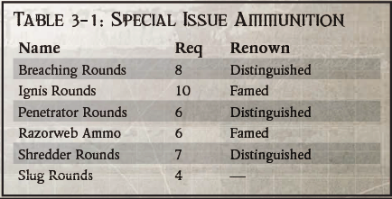
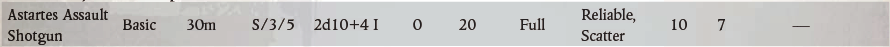
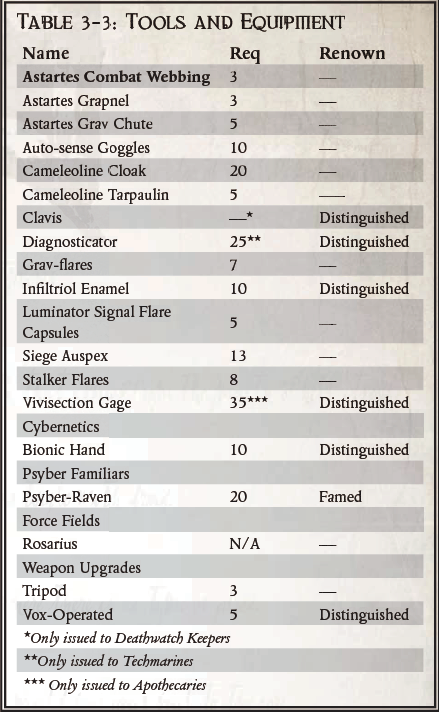

死亡守望侦察兵装甲
基于所有星际战士战团所使用的侦察兵装甲，死亡守望侦察兵装甲是一套轻量级的无动力装甲，由Erioch死亡守望装甲师专门修改，以适应其独特任务的需要。
与暗鸦守卫等战团的狙击手所穿的盔甲类似，死亡守望的侦察兵盔甲由一个硬化的陶瓷胸甲组成，覆盖了星际战士的躯干、肩膀和腹股沟区域，穿在一个加固的身体手套上。装甲后的肘部护手可以保护穿戴者的双手，而重度强化的陶瓷靴可以保证他的双脚安全和干燥。由于死亡守望的侦察兵装甲基本上是套在身体外套上的半身防护服，并且是由轻质材料制成的，所以它不妨碍穿戴者的行动，使他能够保持自然的敏捷性和隐蔽性，同时还能提供良好的保护。这种盔甲通常与迷彩斗篷一起穿戴。
虽然它不像阿斯塔特的动力装甲那样在环境上是密封的，但身体外套的成分和众多的内置系统使穿戴者在危险条件下相对安全。外套上浸有特殊的纤维，上面涂有强大的防腐剂，对原子、化学和生物威胁提供有限的保护。它还织有小的、凝胶状的通道，使戴着它的星际战士能够更好地承受热量和寒冷，因为它可以调节他的温度。安装在盔甲背部的是一个沉重的、坚硬的装置，其中包含饮用水和氧气供应。水和空气是通过一个双重用途的呼吸器/水剂供给输送给穿戴者的，该呼吸器作为一个防毒面具，从周围的大气中抽取空气。他还在铠甲下面戴着一个自动注射器，其功能很像阿斯塔特动力装甲中的自动注射器系统。
除了保护元素，还有一些内置的系统，旨在帮助星际战士完成他的任务，作为他的死亡守望兄弟的眼睛和耳朵。在他的背部，穿戴者携带了一个加密的远距离声纳系统，使他能够与指挥部保持联系，并与空降兵、装甲兵和炮兵部队沟通，充当前方观察员或火力再控制者。装甲的硬板上涂有一种特殊的涂层，使其难以被自动感应、Auspex和augur阵列探测到。内置的系统和装甲手套及外壳的内在品质的结合，使得穿着这种装甲的星际战士，虽然不像他的动力装甲战斗兄弟那样致命，但仍然是一个非常可怕的战斗人员。
渗透者盔甲的不同内置系统和能力如下。
Ceramite板：胸甲和护手为身体和手臂提供AP7。
身体外套：穿在渗透者陶钢板下的身体外套提供了可观的装甲保护，并在保护穿戴者免受敌对环境的影响方面做得很好。它为腿部提供AP5，并在任何抵抗接触性毒药、辐射、酸或化学物质的韧性测试中给予+10。
迷惑之膏：神圣的药膏和特殊的涂层在盔甲的硬板和手套中使它很难通过技术手段被发现。任何试图用自动感应器、Auspex或augur阵列探测穿着渗透者盔甲的星际战士的人，都会在任何技术使用或警觉测试中受到-10的影响。
侦察兵之声：每套渗透者盔甲都带有一个远程的、加密的、多频段的扩音系统，使穿戴者能够与他的部队保持持续的联系。发射器被安置在盔甲的后部存储单元中，并对冲击和损坏进行了严格的隔离。该装置是语音激活的，并通过一个具有耳机/麦克风组合的头盔来操作。它还允许佩戴者与其他单位以及任何死亡守望的盔甲或航空航天单位进行交流。侦察兵的扩音器有35公里的范围，可以像其他侦察兵或安装在车辆和动力装甲上的扩音器系统一样，通过信号中继器无限延伸，并且可以同时传输语音和数据。
对话者信标：一个渗透者套装的对话者信标可以帮助穿戴者向所有与他合作的友军确认其为盟友。对话者信标通过一个窄带的、高度加密的频率进行广播，范围为10公里，它不仅可以识别穿戴者是一名星际战士，而且在他被困住或丧失能力时，还可以作为紧急求救信标。每个战团都有一个独特的频率，他们所有的信标都在这个频率上广播，为了安全起见，战团的技术牧师会不断改变这个频率。
自动注射器袖套：穿在infi ltrator盔甲的一个装甲护手下面，自动注射器袖套是标准Astartes动力盔甲上同一物品的缩小版。它由一些小瓶和一个自动注射器系统组成，由一个内置生物监测器的小型计算机阵列运行。和动力装甲一样，当生物监测器检测到穿戴者的生命迹象有问题时，cogitator会立即施放适当的药物来对抗穿戴它的太空人的任何疾病。这个装置提供以下好处。
抵抗毒物和类似毒物效果的所有测试+5。
两剂抑制疼痛的药物，可以让穿戴盔甲的太空人在1d10回合内无视严重伤害的影响。这些剂量可以连续使用或交错使用。
如果穿戴者被击晕，cogitator会在1d5回合内给他注射一种混合刺激物，这将否定击晕效果。
特殊弹药
死亡守望杀戮队被部署到各种不寻常的情况和任务中，需要战术上的灵活性。为了取得胜利，"死亡守望 "星际战士经常大量使用特殊弹药。
突破弹
这些炮弹装有微小的炸药颗粒，用于突破门和舱门，以便匆忙进入。它们也是很好的（如果射程较短的话）杀伤性子弹，当向大量的敌人开火时。
效果。将武器的伤害类型改为爆炸（X），并将其射程减少一半。
使用对象：阿斯塔特霰弹枪、阿斯塔特突击霰弹枪。
火焰弹
填充了一种粘性的化学物质，在接触到目标后会爆裂成火焰，这些子弹可以将武器变成一个假的火焰。
效果。将武器的伤害类型改为能量（E）。被Ignis Rounds击中的目标必须进行敏捷测试，否则除了受到正常的伤害外，还会着火。
适用于：自动枪、自动手枪、阿斯塔特霰弹枪、阿斯塔特突击霰弹枪。
穿透弹
这些子弹是用来穿透盔甲的，它的特点是在一个的弹壳中装有一个硬化的金刚砂飞镖。
效果。任何装上穿透弹的武器都会增加其穿透力+5。装有穿透弹的霰弹枪会失去散射的特性。
使用对象：自动枪、自动手枪、阿斯塔特霰弹枪、阿斯塔特突击霰弹枪。
剃刀网
剃刀网起源于Calixis区，并在远征征期间进入Jericho Reach的兵工厂。
剃刀网不是使用典型的粘性粘接剂来形成普通的网状弹药，而是由车床锻造世界独特的天文和重力排列中产生的稀有合金组成。这种金属可以用来制造超薄的线，具有金刚砂般的强度和独特的锋利。这种致命的网状物非常整齐，甚至让人看不清，但受害者最轻微的动作都有可能把他撕成丝带。
效果：装有剃刀网的织网机在试图逃脱时都会受到额外的-20惩罚。
此外，每次逃跑尝试，无论成功与否，都会造成2d10的撕裂伤害，穿透8。
配合使用: Webbers
碎裂弹
这些子弹包含了锋利的金刚砂碎片，用于穿透轻质装甲和屠杀成群结队的人群。
效果。装有碎裂弹的霰弹枪，其穿透力增加+1，并获得撕裂的特性。
配合使用：阿斯塔特霰弹枪、阿斯塔特突击霰弹枪。
独头弹
沉重而坚实的金刚砂块，旨在造成巨大的伤害，并尽可能地给受害者造成创伤。独头弹也是很好的近距离反器材弹。
效果。装有独头弹的霰弹枪失去了散射的特性，但获得了撕裂和克敌(1)的特性。
使用对象：阿斯塔特霰弹枪、阿斯塔特突击霰弹枪。

武器
阿斯塔特突击霰弹枪
虽然没有像阿斯塔特爆弹那样在星际战士中具有标志性或广泛性，但阿斯塔特突击霰弹枪是他们的侦察兵使用的一种强大而通用的武器。这些笨重的弹夹式霰弹枪可以单发、半自动和全自动模式射击，并且可以使用一系列的特殊弹药，从穿甲弹到强力阻击弹。突击霰弹枪最适合用于城市和近距离作战，以及在虚空船上的登船行动。

武器升级
三角架
当没有悬挂装置时，战术上较差但广泛使用的支撑重型武器的模式仍然是相当可行的：三角架。三脚架提供了一个简单而稳定的平台，可以在任何相对平整的表面上支撑武器。然而，三脚架需要保持静止的位置，并将武器固定在一个180度的弧线上，因此，它的作用在目标防御或伏击场景之外是有限的。
升级。任何重型武器。
声讯控制
这种升级将特定编码的声音接收器集成到武器的触发机制中，这样用户就可以在需要时通过语音来操作。用户还可以操作射击选择器，如果适用的话，只需说出相应的命令就可以切换火环模式。出于安全考虑，每个接收器通常只与一个语音模式相匹配。此外，如果武器配备了射击选择器，也可以通过大声说话来选择弹夹。
升级。任何手枪、基本武器、手榴弹或重型武器。
工具和装备
阿斯塔特战斗背带
阿斯塔特战斗背带包括一条结实的织带和可拆卸的承重吊带。腰带和承重吊带有五厘米宽，可以调节到几乎所有的体型，也可以套在标准的阿斯塔特侦察兵装甲上。
腰带的设计是为了携带装备和弹药的硬壳和软壳袋，这些装备和弹药是侦察兵需要的，随时可以拿到手。这些袋子有各种尺寸，使用范围从杂志袋到医疗包到皮套和投掷袋。这些袋子用一系列半永久性的夹子连接到皮带和吊带上，可以用任何带刃的工具解开。常见的小袋包括。
弹夹袋：可容纳两个武器弹夹。这些袋子有不同的尺寸，取决于夹子的种类（螺栓，自动手枪，充电包，等等）。
药袋：装有血浆贴片、消毒剂、合成皮肤涂抹器、含有解毒剂的一次性注射器、镇痛剂、吗啡、复苏剂、一些绷带和止血带。对任何医疗测试给予+20的奖励。
通讯袋：可容纳一个标准的手持式阿斯塔特人的通讯装置。
手榴弹袋：可装四枚标准的卡拉克或碎片手榴弹。
刀鞘：可携带一把阿斯塔特的战斗刀。
猎枪袋：携带八发阿斯塔特猎枪弹药。
枪套：绑在大腿上，并通过快速释放带连接到腰带上，每个枪套都是专门为特定的死亡守望准备的。
落袋：像手枪皮套一样连接在作战织带上，落袋可以用来装废旧弹夹或样品，有一个拉绳开口（软）或一个磁力锁（硬）。
GM或玩家可以自由地想出他们认为的任何其他特殊的袋子。
阿斯塔特钩爪
有时星际战士侦察兵小队会在战场上使用，弹弓可以从射手枪中发射钩状或磁性弹片，用一根细而坚固的100米长的电线连接到发射器上。
一旦弹片附着在所需的岩石上，石像鬼或其他固定物上，使用者就可以手动爬线或启动一个动力绞盘。在紧要关头，钩爪也可以作为一种粗糙和混乱的弹射武器使用，造成1d10+2R的伤害，穿透力为2。
阿斯塔特重力伞
偶尔，星际战士的侦察兵小队必须隐蔽地部署，不能使用更常见的方法，如传送或空投舱。在这种不寻常的情况下，侦察兵会使用阿斯塔特的重力降落伞。重力伞依靠悬挂式火绳来对抗重力并减缓下降速度。与允许使用者跃入空中的跳伞不同，重力伞的低功率输出只允许安全的、有指导的坠落，如从运输机上的战斗坠落。它允许从任何高度安全坠落。
自动感应护目镜
这些笨重的护目镜（最常被星际战士的狙击手佩戴）为佩戴者提供了许多视觉增强功能。这种护目镜有许多型号和变种。它们中的许多结合了光电探测器（不因黑暗而受到惩罚）和猎物感应（在夜间或黑暗中的视觉感知测试+20）的效果，可以探测和看到广泛的放射性频率，可以记录图片，有5倍的光学增强，5倍的微磁化，以及一些可以从视口插入和取出的彩色过滤器。这些护目镜还有一个内置的激光测距仪，允许佩戴者作为前线观察员或炮兵和航空部队的火力控制员，准确定位目标，计算火圈解决方案，并将数据广播给等待的单位。当使用激光测距仪引导火炮或航天器时，前线观察员可在盟军单位的弹道技能测试中获得+20。
迷彩斗篷
这种连帽斗篷是死亡守望的神枪手所喜爱的，它是由网状的背衬和数千条变色和吸光材料编织而成的。穿着迷彩斗篷的神枪手在所有隐蔽测试中获得+20的奖励。当静止，被远程武器瞄准时，穿戴者会被视为在原先的高一级范围内。
来利林油布
这些薄而有弹性的防水布是由光敏的、变色的织物片制成的，可以变成周围环境的样子。在发行的五米乘五米的薄片中，Comeleoline防水布可以钩在一起，以隐藏任何东西，从兰德速攻者到犀牛到整个营地。使用油布来隐藏车辆和炮台，可以使使用者在所有隐蔽性测试中获得+30的成绩。
克莱维斯
克拉维斯是一种特殊的银色臂章，是星际战士在成为死亡守护者时被授予的一件盔甲。它是在黑暗科技时代创造的，机械专家们并不完全了解它的工作原理，但人们知道它与太空人的神经系统相连接，并监测其生命体征。
克莱维斯是一把独特而复杂的钥匙，它包含了无数审问者的超控代码和其他更神秘的系统，使它能够绕过几乎所有的技术密封。
克莱维斯用光、振动和其他鲜为人知的方式进行交流，在守护者的命令下解开磁锁和防护屏障。仆人和其他自动防御系统将守护者登记为朋友，并在他面前停止行动。克莱维斯使守护者能够不受干扰地守夜，并到达几乎任何安全区域。
效果：克莱维斯几乎可以绕过任何帝国的锁、封条或自动防御系统。如果需要掷骰子，即使佩戴者不具备安全技能，也可以完全使用该技能，此外还可以为任何安全测试增加+30的奖励。此外，由于该设备能够监控佩戴者的重要信息，对佩戴者进行的医疗测试也会获得+10的奖励。
诊断器
这个小型的手持设备包含了一些技术诊断工具和一个小型的密码器阵列，可以让死亡守望技术战术诊断出机魂的问题。
它有许多常见的插头和适配器，可以插入几乎所有人类制造的机器，还有传感器和扫描器，可以看穿船体和外壳，检测微观裂缝和材料疲劳，并在一般情况下帮助技术战士履行他对全能神的日常义务。使用机魂诊断器的科技战士在诊断或修理故障设备时，在所有科技使用测试中获得+20的奖励。
泰伦信息素Infiltriol enamel
在极少数情况下，一个任务需要一个杀戮小组部署在一个泰伦威胁有增无减的星球上。尽管天主教会确实很强大，但面对无数的泰伦群，他们的胜算并不大。一个战斗兄弟绝不会逃避这样的任务，但他的生命太宝贵了，不能浪费。
为了解决这个问题，Magos Genetus Iyrzek（隶属于Jericho Reach的Achilus Crade的Mechanicus部队）合成了Infiltriol，它利用了大多数泰伦常见的强烈气味感受器。Infiltriol使用从憔悴属成员中提取的基本信息素来掩盖接受这种物质的对象的生物特征。Infiltriol只针对蜂巢舰队Dagon的化学受体而配制。目前还完全不知道如何为其他蜂巢舰队制造这种物质。当一个战斗兄弟的动力装甲被Infiltriol处理后，大多数泰伦生物不会把他当作敌人来识别。这使得他可以相对不受阻碍地走过充满虫子的区域。然而，如果过于接近更聪明和更有洞察力的物种，如突触生物或先锋生物，就有可能暴露欺骗行为，使泰伦的愤怒降临到入侵者身上。
一个角色必须在一个环境密封的单元内（如阿斯塔特动力装甲），信息素才会有效。在戴上生物面具后，只要不接近泰伦生物2米以上的感知奖励，角色就不会被适用的蜂巢舰队成员注意到，并保持有效的 "隐身"。一旦角色进入这个范围，任何GM认为合适的泰伦生物都可以进行意识测试，以识别该角色为食物。任何泰伦生物的这种发现，或者对蜂巢舰队成员的任何攻击，都会自动将该角色暴露在所有泰伦生物的视线中。
使用Infiltriol的时间为1d10+10小时。自然地，有灵能能力泰伦（如虫巢暴君）很少被这样的欺骗所蒙蔽，因此在他们的意识测试中获得+20的奖励。
Infiltriol储备通常由任务主管部门与任务所需的其他装备分开发放。
照明弹
从整体管状发射器发射，照明弹用于照亮大面积的地形。用一个小型火箭发动机使其升到高空，用一个类似于重力板的低功率重力系统使其保持在那里，这些极高强度的化学火焰可以照亮一个大约10公里宽的区域，并持续2d10分钟。它们有红色、白色、绿色、金色和蓝色。
发光信号胶囊
这些高强度的信标大约是标准螺爆弹的一半大小，有两种工作模式，稳定和频闪。在稳定模式下，它们用于标记和照明，可以照亮一个直径为五米的区域。在频闪模式下，Luminator Flare每分钟开关数百次，通常用作遇险信标。与灯组或发光球不同，发光器只能使用一次——当它们耗尽能量时就会被丢弃。发光器在稳定模式下可以持续1d10小时，在频闪模式下可以持续1d5小时。
攻城探测仪
攻城探测仪是一个强大的扫描器，可以看穿最密集的材料，找到它们的薄弱点。这些物品用于发现应力断裂、加固或增强装甲的区域、隐藏的通道、电源管道以及攻城工程师感兴趣的许多其他物品。攻城机的机魂，虽然很聪明，但只能看到这么远的固体物体，并且有大约20米的固定范围。像能量场、厚厚的舱壁、铁、石头、装甲玻璃和塑钢等东西都可以减少单位的射程或使其完全失明。
GM应该考虑到被扫描的材料，并相应地调整攻城探测仪的范围。
潜行标记
肉眼看不见，这些小的化学标记只能通过照片或猎物感应瞄准器或使用自动感应护目镜的人检测。它们允许星际战士以难以或不可能被敌军发现的方式标记小路和登陆区。
活体解剖仪
主要是死亡守望技术员和药剂师使用的工具，特别是那些与Magos Biologis有关系的人，这个看起来很邪恶的装置主要用于维持死亡守望机仆的队伍。活体解剖仪在守望堡垒Erioch的科技人员的锻造厂和实验室里很常见，它是一个肘部长度的护手，由金刚砂和陶瓷的紧密交错的板块组成。手部本身含有类似于电子手的增强功能，而护手则含有一些激光切割器、生物溶剂、自动注射器、剪子和钳子。虽然被设计为医疗或科学设备，但活体解剖仪也可以作为一个非常有效的审讯设备。
当科技战士或药剂师为了研究或维护机仆而使用活体解剖仪时，用户可以在所有医学测试中获得+10的奖励。当被用作审讯装置时，它能使佩戴者在审讯和恐吓测试中获得+10的奖励，造成1d5+5R的伤害，并拥有撕裂和淬毒特性。
科技植入物
仿生手
在科技战士和其他自愿将自己的一部分交给全能神的神职人员中，手是一个经常性的选择。普通工艺的仿生手的功能与被替换的附属物相同。那些特殊工艺的仿生手提供与仿生臂相同的+10的操纵测试奖励，但没有力量奖励。
